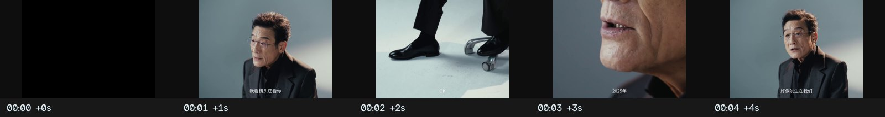
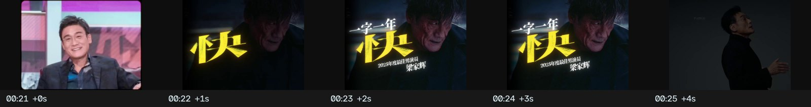
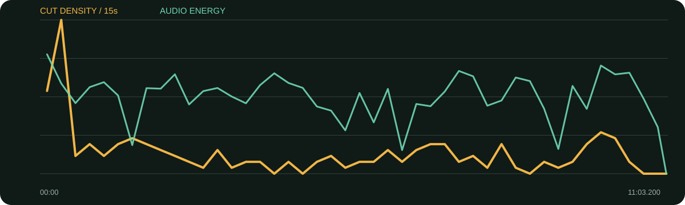

景别 / 机位系统
- 正文以冷灰棚拍的近/中/全景为骨架
- 手势强、身体运动多，切点常跟动作落点
- 开头和后段用现场、灯光、后台、走动等运动镜头重置视觉
- 档案角色片段证明“千面演员”，不是泛化装饰
前23秒已经完成一支人物预告：一句人物原声、鞋/脸细节、现场运动、飞机、监视器、站姿、旧作档案，最后才落标题“不灭”。正文再回到稳定访谈，形成快开慢谈。
口径说明：候选镜头由场景检测生成，闪光、人物快速动作、数字推拉和图形变化都可能误触发；逐秒重点由真实原片、字幕语义和全片总览人工选择。字幕来自本地中文语音识别，人名、品牌名与行业词可能有误，不把自动转写当逐字稿。
每张总览按时间顺序覆盖全片。它用于检查章节、B-roll密度和景别回环；详细切点以候选镜头表与下面的逐秒重点为准。
| 时间 | 章节 | 内容推进 | 剪辑任务 |
|---|---|---|---|
| 00:00–00:24 | 人物预告：不灭 | 用原声、细节、现场与档案建立“仍在场”。 | 高密度蒙太奇后落标题。 |
| 00:24–02:06 | 快时代与不躺平 | 谈2025的快、劳动者与自行车比喻。 | 从快切回稳定谈话，观点按笑点和重音切景别。 |
| 02:06–04:07 | 角色、年龄与油腻 | 坏人角色、外公身份、规矩与心态。 | 反应与笑点保留，节奏轻快。 |
| 04:07–06:06 | 衰老、生命与往回走 | 朋友离开、拒绝病床式存活、回到25岁。 | 内容变重时减少档案干扰。 |
| 06:06–08:12 | 家庭、幸运与观察 | 家人不让退休、行业未放弃、童年观察习惯。 | 手部/旧作素材帮助连接个人史。 |
| 08:12–11:03 | 电影变迁与生活平衡 | 市场变化、短剧、极端性格与当下福气。 | 后段增加后台与现场画面，最后回人物余韵。 |
B-roll分三类：拍摄现场证明当下状态，旧作档案证明职业跨度，后台/灯光/行走负责章节呼吸。
综合音轨平均能量较低，片头与空镜含静默/弱声段的可能性高；未做配乐分离与人工听辨，因此只报告综合强弱和静默候选。
每张长图从左到右为真实的连续秒点。重点不是记住截图，而是看清一组画面怎样“进入—完成任务—退出”。

画面事实先用触感碎片和一句话制造人物好奇。
怎么复现准备一句有性格的原声，再找三个可触摸的身体/服装细节。
画面事实空间跨度突然扩大，建立职业世界。
怎么复现每个镜头只承担一个名词，动作方向尽量接续。
画面事实用不同年代/角色证明职业跨度。
怎么复现档案按表情或动作匹配，不按年份流水账。

画面事实标题在证据之后出现，因此不是空口口号。
怎么复现标题前留一拍或暗场，让观众完成前段信息。
画面事实长访谈中用动作细节覆盖语句压缩。
怎么复现现场补拍手、衣料、起身、喝水四类保险镜头。
画面事实谈角色/电影时回到真实影像，增强可信度。
怎么复现每段档案必须能回答“它证明了哪句话”。
画面事实从观点回到当下拍摄现场，提示人物仍在行动。
怎么复现尾声用现场行动代替总结式口号。

| 观察项 | 15秒窗口 |
|---|---|
| 视觉最密 | 00:15–00:30（104.0 候选切镜/分）；00:00–00:15（56.0 候选切镜/分）；09:45–10:00（28.0 候选切镜/分） |
| 视觉最缓 | 04:00–04:15（0.0 候选切镜/分）；04:30–04:45（0.0 候选切镜/分）；08:30–08:45（0.0 候选切镜/分） |
| 综合音轨最强 | 00:00–00:15（-20.1 dBFS）；09:45–10:00（-23.3 dBFS）；07:15–07:30（-24.9 dBFS） |
“视觉最密/最缓”基于自动候选切镜；“综合音轨最强”包含人声、环境声、音乐和音效，不能单独当作配乐音量。平均综合音轨为 -32.67 dBFS，最高15秒窗口 -20.07 dBFS，最低15秒窗口 -120.00 dBFS。
| # | 入点 | 出点 | 时长 | 代表帧秒点 | 证据 |
|---|---|---|---|---|---|
| 1 | 00:00.000 | 00:01.520 | 1.52s | 0.684000s | 自动候选 |
| 2 | 00:01.520 | 00:01.960 | 0.44s | 1.718000s | 自动候选 |
| 3 | 00:01.960 | 00:02.880 | 0.92s | 2.374000s | 自动候选 |
| 4 | 00:02.880 | 00:03.960 | 1.08s | 3.366000s | 自动候选 |
| 5 | 00:03.960 | 00:05.400 | 1.44s | 4.608000s | 自动候选 |
| 6 | 00:05.400 | 00:05.560 | 0.16s | 5.472000s | 自动候选 |
| 7 | 00:05.560 | 00:06.160 | 0.60s | 5.830000s | 自动候选 |
| 8 | 00:06.160 | 00:06.720 | 0.56s | 6.412000s | 自动候选 |
| 9 | 00:06.720 | 00:07.440 | 0.72s | 7.044000s | 自动候选 |
| 10 | 00:07.440 | 00:08.120 | 0.68s | 7.746000s | 自动候选 |
| 11 | 00:08.120 | 00:08.760 | 0.64s | 8.408000s | 自动候选 |
| 12 | 00:08.760 | 00:09.200 | 0.44s | 8.958000s | 自动候选 |
| 13 | 00:09.200 | 00:09.840 | 0.64s | 9.488000s | 自动候选 |
| 14 | 00:09.840 | 00:10.800 | 0.96s | 10.272000s | 自动候选 |
| 15 | 00:10.800 | 00:16.000 | 5.20s | 11.550000s | 自动候选 |
| 16 | 00:16.000 | 00:16.440 | 0.44s | 16.198000s | 自动候选 |
| 17 | 00:16.440 | 00:16.840 | 0.40s | 16.620000s | 自动候选 |
| 18 | 00:16.840 | 00:17.240 | 0.40s | 17.020000s | 自动候选 |
| 19 | 00:17.240 | 00:17.560 | 0.32s | 17.384000s | 自动候选 |
| 20 | 00:17.560 | 00:17.840 | 0.28s | 17.686000s | 自动候选 |
| 21 | 00:17.840 | 00:18.040 | 0.20s | 17.930000s | 自动候选 |
| 22 | 00:18.040 | 00:18.240 | 0.20s | 18.130000s | 自动候选 |
| 23 | 00:18.240 | 00:18.440 | 0.20s | 18.330000s | 自动候选 |
| 24 | 00:18.440 | 00:18.640 | 0.20s | 18.530000s | 自动候选 |
| 25 | 00:18.640 | 00:18.840 | 0.20s | 18.730000s | 自动候选 |
| 26 | 00:18.840 | 00:19.120 | 0.28s | 18.966000s | 自动候选 |
| 27 | 00:19.120 | 00:19.400 | 0.28s | 19.246000s | 自动候选 |
| 28 | 00:19.400 | 00:19.640 | 0.24s | 19.508000s | 自动候选 |
| 29 | 00:19.640 | 00:19.800 | 0.16s | 19.712000s | 自动候选 |
| 30 | 00:19.800 | 00:20.040 | 0.24s | 19.908000s | 自动候选 |
| 31 | 00:20.040 | 00:20.240 | 0.20s | 20.130000s | 自动候选 |
| 32 | 00:20.240 | 00:20.440 | 0.20s | 20.330000s | 自动候选 |
| 33 | 00:20.440 | 00:20.640 | 0.20s | 20.530000s | 自动候选 |
| 34 | 00:20.640 | 00:20.840 | 0.20s | 20.730000s | 自动候选 |
| 35 | 00:20.840 | 00:21.040 | 0.20s | 20.930000s | 自动候选 |
| 36 | 00:21.040 | 00:21.240 | 0.20s | 21.130000s | 自动候选 |
| 37 | 00:21.240 | 00:21.440 | 0.20s | 21.330000s | 自动候选 |
| 38 | 00:21.440 | 00:21.960 | 0.52s | 21.674000s | 自动候选 |
| 39 | 00:21.960 | 00:24.400 | 2.44s | 22.710000s | 自动候选 |
| 40 | 00:24.400 | 00:27.360 | 2.96s | 25.150000s | 自动候选 |
| 41 | 00:27.360 | 00:29.120 | 1.76s | 28.110000s | 自动候选 |
| 42 | 00:29.120 | 00:30.640 | 1.52s | 29.804000s | 自动候选 |
| 43 | 00:30.640 | 00:31.240 | 0.60s | 30.910000s | 自动候选 |
| 44 | 00:31.240 | 00:37.160 | 5.92s | 31.990000s | 自动候选 |
| 45 | 00:37.160 | 00:40.600 | 3.44s | 37.910000s | 自动候选 |
| 46 | 00:40.600 | 00:47.320 | 6.72s | 41.350000s | 自动候选 |
| 47 | 00:47.320 | 00:50.000 | 2.68s | 48.070000s | 自动候选 |
| 48 | 00:50.000 | 00:53.080 | 3.08s | 50.750000s | 自动候选 |
| 49 | 00:53.080 | 00:55.280 | 2.20s | 53.830000s | 自动候选 |
| 50 | 00:55.280 | 00:56.760 | 1.48s | 55.946000s | 自动候选 |
| 51 | 00:56.760 | 00:59.680 | 2.92s | 57.510000s | 自动候选 |
| 52 | 00:59.680 | 01:01.160 | 1.48s | 60.346000s | 自动候选 |
| 53 | 01:01.160 | 01:09.200 | 8.04s | 61.910000s | 自动候选 |
| 54 | 01:09.200 | 01:11.480 | 2.28s | 69.950000s | 自动候选 |
| 55 | 01:11.480 | 01:14.080 | 2.60s | 72.230000s | 自动候选 |
| 56 | 01:14.080 | 01:16.880 | 2.80s | 74.830000s | 自动候选 |
| 57 | 01:16.880 | 01:19.840 | 2.96s | 77.630000s | 自动候选 |
| 58 | 01:19.840 | 01:24.560 | 4.72s | 80.590000s | 自动候选 |
| 59 | 01:24.560 | 01:26.440 | 1.88s | 85.310000s | 自动候选 |
| 60 | 01:26.440 | 01:27.800 | 1.36s | 87.052000s | 自动候选 |
| 61 | 01:27.800 | 01:29.160 | 1.36s | 88.412000s | 自动候选 |
| 62 | 01:29.160 | 01:30.880 | 1.72s | 89.910000s | 自动候选 |
| 63 | 01:30.880 | 01:37.920 | 7.04s | 91.630000s | 自动候选 |
| 64 | 01:37.920 | 01:38.840 | 0.92s | 98.334000s | 自动候选 |
| 65 | 01:38.840 | 01:40.120 | 1.28s | 99.416000s | 自动候选 |
| 66 | 01:40.120 | 01:40.600 | 0.48s | 100.336000s | 自动候选 |
| 67 | 01:40.600 | 01:41.880 | 1.28s | 101.176000s | 自动候选 |
| 68 | 01:41.880 | 01:42.800 | 0.92s | 102.294000s | 自动候选 |
| 69 | 01:42.800 | 01:46.320 | 3.52s | 103.550000s | 自动候选 |
| 70 | 01:46.320 | 01:49.760 | 3.44s | 107.070000s | 自动候选 |
| 71 | 01:49.760 | 01:51.360 | 1.60s | 110.480000s | 自动候选 |
| 72 | 01:51.360 | 01:53.800 | 2.44s | 112.110000s | 自动候选 |
| 73 | 01:53.800 | 01:56.280 | 2.48s | 114.550000s | 自动候选 |
| 74 | 01:56.280 | 01:59.920 | 3.64s | 117.030000s | 自动候选 |
| 75 | 01:59.920 | 02:05.040 | 5.12s | 120.670000s | 自动候选 |
| 76 | 02:05.040 | 02:06.080 | 1.04s | 125.508000s | 自动候选 |
| 77 | 02:06.080 | 02:07.440 | 1.36s | 126.692000s | 自动候选 |
| 78 | 02:07.440 | 02:12.520 | 5.08s | 128.190000s | 自动候选 |
| 79 | 02:12.520 | 02:13.720 | 1.20s | 133.060000s | 自动候选 |
| 80 | 02:13.720 | 02:16.760 | 3.04s | 134.470000s | 自动候选 |
| 81 | 02:16.760 | 02:21.400 | 4.64s | 137.510000s | 自动候选 |
| 82 | 02:21.400 | 02:25.920 | 4.52s | 142.150000s | 自动候选 |
| 83 | 02:25.920 | 02:28.760 | 2.84s | 146.670000s | 自动候选 |
| 84 | 02:28.760 | 02:33.400 | 4.64s | 149.510000s | 自动候选 |
| 85 | 02:33.400 | 02:39.400 | 6.00s | 154.150000s | 自动候选 |
| 86 | 02:39.400 | 02:44.600 | 5.20s | 160.150000s | 自动候选 |
| 87 | 02:44.600 | 02:53.640 | 9.04s | 165.350000s | 自动候选 |
| 88 | 02:53.640 | 02:56.520 | 2.88s | 174.390000s | 自动候选 |
| 89 | 02:56.520 | 03:01.920 | 5.40s | 177.270000s | 自动候选 |
| 90 | 03:01.920 | 03:04.120 | 2.20s | 182.670000s | 自动候选 |
| 91 | 03:04.120 | 03:05.320 | 1.20s | 184.660000s | 自动候选 |
| 92 | 03:05.320 | 03:08.800 | 3.48s | 186.070000s | 自动候选 |
| 93 | 03:08.800 | 03:13.400 | 4.60s | 189.550000s | 自动候选 |
| 94 | 03:13.400 | 03:17.800 | 4.40s | 194.150000s | 自动候选 |
| 95 | 03:17.800 | 03:21.480 | 3.68s | 198.550000s | 自动候选 |
| 96 | 03:21.480 | 03:30.560 | 9.08s | 202.230000s | 自动候选 |
| 97 | 03:30.560 | 03:37.160 | 6.60s | 211.310000s | 自动候选 |
| 98 | 03:37.160 | 03:43.560 | 6.40s | 217.910000s | 自动候选 |
| 99 | 03:43.560 | 03:46.640 | 3.08s | 224.310000s | 自动候选 |
| 100 | 03:46.640 | 03:50.720 | 4.08s | 227.390000s | 自动候选 |
| 101 | 03:50.720 | 03:59.640 | 8.92s | 231.470000s | 自动候选 |
| 102 | 03:59.640 | 04:12.680 | 13.04s | 240.390000s | 自动候选 |
| 103 | 04:12.680 | 04:15.400 | 2.72s | 253.430000s | 自动候选 |
| 104 | 04:15.400 | 04:17.680 | 2.28s | 256.150000s | 自动候选 |
| 105 | 04:17.680 | 04:21.640 | 3.96s | 258.430000s | 自动候选 |
| 106 | 04:21.640 | 04:36.400 | 14.76s | 262.390000s | 自动候选 |
| 107 | 04:36.400 | 04:57.120 | 20.72s | 277.150000s | 自动候选 |
| 108 | 04:57.120 | 04:58.480 | 1.36s | 297.732000s | 自动候选 |
| 109 | 04:58.480 | 04:59.600 | 1.12s | 298.984000s | 自动候选 |
| 110 | 04:59.600 | 05:01.200 | 1.60s | 300.320000s | 自动候选 |
| 111 | 05:01.200 | 05:01.920 | 0.72s | 301.524000s | 自动候选 |
| 112 | 05:01.920 | 05:03.040 | 1.12s | 302.424000s | 自动候选 |
| 113 | 05:03.040 | 05:09.240 | 6.20s | 303.790000s | 自动候选 |
| 114 | 05:09.240 | 05:22.760 | 13.52s | 309.990000s | 自动候选 |
| 115 | 05:22.760 | 05:26.560 | 3.80s | 323.510000s | 自动候选 |
| 116 | 05:26.560 | 05:31.480 | 4.92s | 327.310000s | 自动候选 |
| 117 | 05:31.480 | 05:34.160 | 2.68s | 332.230000s | 自动候选 |
| 118 | 05:34.160 | 05:40.840 | 6.68s | 334.910000s | 自动候选 |
| 119 | 05:40.840 | 05:45.160 | 4.32s | 341.590000s | 自动候选 |
| 120 | 05:45.160 | 05:48.560 | 3.40s | 345.910000s | 自动候选 |
| 121 | 05:48.560 | 05:50.400 | 1.84s | 349.310000s | 自动候选 |
| 122 | 05:50.400 | 06:02.280 | 11.88s | 351.150000s | 自动候选 |
| 123 | 06:02.280 | 06:06.520 | 4.24s | 363.030000s | 自动候选 |
| 124 | 06:06.520 | 06:09.120 | 2.60s | 367.270000s | 自动候选 |
| 125 | 06:09.120 | 06:10.480 | 1.36s | 369.732000s | 自动候选 |
| 126 | 06:10.480 | 06:13.200 | 2.72s | 371.230000s | 自动候选 |
| 127 | 06:13.200 | 06:15.520 | 2.32s | 373.950000s | 自动候选 |
| 128 | 06:15.520 | 06:19.600 | 4.08s | 376.270000s | 自动候选 |
| 129 | 06:19.600 | 06:28.160 | 8.56s | 380.350000s | 自动候选 |
| 130 | 06:28.160 | 06:34.080 | 5.92s | 388.910000s | 自动候选 |
| 131 | 06:34.080 | 06:36.240 | 2.16s | 394.830000s | 自动候选 |
| 132 | 06:36.240 | 06:37.440 | 1.20s | 396.780000s | 自动候选 |
| 133 | 06:37.440 | 06:38.760 | 1.32s | 398.034000s | 自动候选 |
| 134 | 06:38.760 | 06:44.960 | 6.20s | 399.510000s | 自动候选 |
| 135 | 06:44.960 | 06:46.040 | 1.08s | 405.446000s | 自动候选 |
| 136 | 06:46.040 | 06:48.080 | 2.04s | 406.790000s | 自动候选 |
| 137 | 06:48.080 | 06:48.800 | 0.72s | 408.404000s | 自动候选 |
| 138 | 06:48.800 | 06:49.360 | 0.56s | 409.052000s | 自动候选 |
| 139 | 06:49.360 | 06:50.760 | 1.40s | 409.990000s | 自动候选 |
| 140 | 06:50.760 | 06:59.880 | 9.12s | 411.510000s | 自动候选 |
| 141 | 06:59.880 | 07:07.200 | 7.32s | 420.630000s | 自动候选 |
| 142 | 07:07.200 | 07:08.360 | 1.16s | 427.722000s | 自动候选 |
| 143 | 07:08.360 | 07:09.680 | 1.32s | 428.954000s | 自动候选 |
| 144 | 07:09.680 | 07:11.360 | 1.68s | 430.430000s | 自动候选 |
| 145 | 07:11.360 | 07:12.560 | 1.20s | 431.900000s | 自动候选 |
| 146 | 07:12.560 | 07:14.400 | 1.84s | 433.310000s | 自动候选 |
| 147 | 07:14.400 | 07:18.280 | 3.88s | 435.150000s | 自动候选 |
| 148 | 07:18.280 | 07:21.520 | 3.24s | 439.030000s | 自动候选 |
| 149 | 07:21.520 | 07:28.360 | 6.84s | 442.270000s | 自动候选 |
| 150 | 07:28.360 | 07:30.200 | 1.84s | 449.110000s | 自动候选 |
| 151 | 07:30.200 | 07:34.160 | 3.96s | 450.950000s | 自动候选 |
| 152 | 07:34.160 | 07:40.400 | 6.24s | 454.910000s | 自动候选 |
| 153 | 07:40.400 | 07:43.600 | 3.20s | 461.150000s | 自动候选 |
| 154 | 07:43.600 | 07:49.200 | 5.60s | 464.350000s | 自动候选 |
| 155 | 07:49.200 | 07:54.200 | 5.00s | 469.950000s | 自动候选 |
| 156 | 07:54.200 | 08:01.440 | 7.24s | 474.950000s | 自动候选 |
| 157 | 08:01.440 | 08:04.320 | 2.88s | 482.190000s | 自动候选 |
| 158 | 08:04.320 | 08:07.680 | 3.36s | 485.070000s | 自动候选 |
| 159 | 08:07.680 | 08:08.600 | 0.92s | 488.094000s | 自动候选 |
| 160 | 08:08.600 | 08:10.200 | 1.60s | 489.320000s | 自动候选 |
| 161 | 08:10.200 | 08:11.920 | 1.72s | 490.950000s | 自动候选 |
| 162 | 08:11.920 | 08:16.120 | 4.20s | 492.670000s | 自动候选 |
| 163 | 08:16.120 | 08:22.240 | 6.12s | 496.870000s | 自动候选 |
| 164 | 08:22.240 | 08:34.040 | 11.80s | 502.990000s | 自动候选 |
| 165 | 08:34.040 | 08:45.400 | 11.36s | 514.790000s | 自动候选 |
| 166 | 08:45.400 | 08:48.680 | 3.28s | 526.150000s | 自动候选 |
| 167 | 08:48.680 | 08:52.120 | 3.44s | 529.430000s | 自动候选 |
| 168 | 08:52.120 | 09:02.000 | 9.88s | 532.870000s | 自动候选 |
| 169 | 09:02.000 | 09:14.920 | 12.92s | 542.750000s | 自动候选 |
| 170 | 09:14.920 | 09:18.480 | 3.56s | 555.670000s | 自动候选 |
| 171 | 09:18.480 | 09:26.960 | 8.48s | 559.230000s | 自动候选 |
| 172 | 09:26.960 | 09:29.000 | 2.04s | 567.710000s | 自动候选 |
| 173 | 09:29.000 | 09:37.720 | 8.72s | 569.750000s | 自动候选 |
| 174 | 09:37.720 | 09:39.000 | 1.28s | 578.296000s | 自动候选 |
| 175 | 09:39.000 | 09:40.560 | 1.56s | 579.702000s | 自动候选 |
| 176 | 09:40.560 | 09:42.320 | 1.76s | 581.310000s | 自动候选 |
| 177 | 09:42.320 | 09:44.320 | 2.00s | 583.070000s | 自动候选 |
| 178 | 09:44.320 | 09:44.480 | 0.16s | 584.392000s | 自动候选 |
| 179 | 09:44.480 | 09:45.520 | 1.04s | 584.948000s | 自动候选 |
| 180 | 09:45.520 | 09:45.720 | 0.20s | 585.610000s | 自动候选 |
| 181 | 09:45.720 | 09:46.600 | 0.88s | 586.116000s | 自动候选 |
| 182 | 09:46.600 | 09:46.760 | 0.16s | 586.672000s | 自动候选 |
| 183 | 09:46.760 | 09:48.080 | 1.32s | 587.354000s | 自动候选 |
| 184 | 09:48.080 | 09:50.200 | 2.12s | 588.830000s | 自动候选 |
| 185 | 09:50.200 | 09:50.920 | 0.72s | 590.524000s | 自动候选 |
| 186 | 09:50.920 | 09:53.040 | 2.12s | 591.670000s | 自动候选 |
| 187 | 09:53.040 | 10:00.040 | 7.00s | 593.790000s | 自动候选 |
| 188 | 10:00.040 | 10:04.000 | 3.96s | 600.790000s | 自动候选 |
| 189 | 10:04.000 | 10:04.840 | 0.84s | 604.378000s | 自动候选 |
| 190 | 10:04.840 | 10:06.400 | 1.56s | 605.542000s | 自动候选 |
| 191 | 10:06.400 | 10:09.920 | 3.52s | 607.150000s | 自动候选 |
| 192 | 10:09.920 | 10:12.440 | 2.52s | 610.670000s | 自动候选 |
| 193 | 10:12.440 | 10:13.840 | 1.40s | 613.070000s | 自动候选 |
| 194 | 10:13.840 | 10:15.640 | 1.80s | 614.590000s | 自动候选 |
| 195 | 10:15.640 | 10:19.960 | 4.32s | 616.390000s | 自动候选 |
| 196 | 10:19.960 | 10:24.960 | 5.00s | 620.710000s | 自动候选 |
| 197 | 10:24.960 | 10:36.520 | 11.56s | 625.710000s | 自动候选 |
| 198 | 10:36.520 | 10:58.720 | 22.20s | 637.270000s | 自动候选 |
| 199 | 10:58.720 | 11:03.200 | 4.48s | 659.470000s | 自动候选 |